© Esta obra está bajo una licencia de Creative Commons Reconocimiento 4.0 Internacional.
GitHub Education Shell
Una Shell para el uso de GitHub en la Enseñanza
A Shell for the use of GitHub in Education
Javier Clemente Rodríguez Gómez
La Laguna,
Grado en Ingeniería Informática
Trabajo de Fin de Grado
D. Casiano Rodríguez León, con N.I.F. 42.020.072-S profesor Catedrático de Universidad adscrito al Departamento de Ingeniería Informática y de Sistemas de la Universidad de La Laguna, como tutor
C E R T I F I C A (N)
Que la presente memoria titulada:
“GHEDSH: Una Shell para el uso de Github en la enseñanza”
ha sido realizada bajo su dirección por D. Javier Clemente Rodríguez Gómez,
con N.I.F. 78633504T.
Y para que así conste,
en cumplimiento de la legislación vigente y a los efectos oportunos
firman la presente en La Laguna a
Agradecimientos
Casiano Rodríguez León
Licencia
©
Esta obra está bajo una licencia de Creative Commons Reconocimiento
4.0 Internacional.
Resumen
Este proyecto trata de la elaboración de un programa en Ruby que permita tanto el uso y manejo de datos de Github, como la asignación de tareas por medio de repositorios en el entorno educacional haciendo uso de una Shell. Para ello se seguirá la metodología de la plataforma GitHub Education sobre el manejo de las Organizaciones como una clase para profesor y sus alumnos.
Palabras clave: GitHub, GitHub Education, repositorios, organizaciones, asignaciones, Shell, Ruby
Abstract
This project is about the elaboration of a program in Ruby that allows both the use and handling of Github data, as well as the assignment of tasks through repositories in the educational environment using a Shell. This will be followed by the methodology of the GitHub Education platform on the management of Organizations as a class for teachers and their students.
Keywords: GitHub, GitHub Education, repositories, organizations, assignments, Shell, Ruby
Índice general
1.1 ¿Que es GitHub Education? 1
1.2 Antecedentes y situación actual 2
Capítulo 2 Objetivos y plan de trabajo 3
Capítulo 3 Desarrollo de la aplicación 5
3.1 Estudio sobre el funcionamiento de la API de GitHub 5
3.1.1 Uso de la librería Octokit 6
3.2.1 Introducción y metodología 7
3.2.4 Ejecutando el programa por primera vez 13
3.3 Problemas encontrados y soluciones 14
3.3.1 Consultas y datos recibidos por la API 14
3.3.2 La usabilidad en la navegación 14
4.1 Navegación y uso básico 15
5.2 Comandos a nivel de Repositorio 29
5.3 Comandos a nivel de Organización 30
5.4 Comandos a nivel de Asignaciones 33
5.5 Comandos a nivel de Equipo 34
5.6 Comandos a nivel de Usuario 35
Capítulo 6 Conclusiones y líneas futuras 36
Índice de figuras
ghed 1
ghclass 2
diagrama 7
oauth 11
oauth2 12
oauth3 12
tutorial 15
tutorial2 16
tutorial3 17
tutorial4 17
tutorial5 18
tutorial6 19
tutorial7 20
tutorial8 21
tutorial9 22
tutorial10 23
tutorial11 23
tutorial12 24
tutorial13 24
tutorial14 24
tutorial15 25
tutorial16 25
tutorial17 26
tutorial18 26
tutorial19 26
Índice de tablas
Plan de trabajo 4
GitHub Education [1] es una plataforma creada por GitHub para difundir el uso y manejo de repositorios en el entorno educacional. Además de proveer paquetes de herramientas de desarrollo externas de manera gratuita, también ofrecen una metodología de trabajo apoyada por aplicaciones web que hacen uso de su sistema.
Ellos proponen usar una organización de GitHub, una zona conjunta para la asignación de proyectos en grupo, enfocada como si de una clase con alumnos se tratase. La idea es que un profesor cree una organización y luego añada a la misma alumnos para que posteriormente vaya asignándole repositorios con diferentes tareas, para que pueda evaluarlas y hacer feedback mediante las herramientas que ofrece GitHub.
A la hora llevar a cabo esta idea, GitHub posee los elementos que pueden ser representados como el profesor, el alumno, o las tareas a realizar, pero realmente no tienen un sistema de asignación específico para ello. Por lo que su concepto de Asignación (o Assignment) debe ser manejado por un sistema externo, que en este caso haga uso de su interfaz de programación de aplicaciones (GitHub API).
Actualmente existen dos aplicaciones web que manejan o intentan usar esta metodología planteada por GitHub Education.
Teacher's Pet [2]:
Se trata de una aplicación de línea de comandos que ejecuta consultas hacia la API de GitHub. Ahora mismo esta en desuso, y además de no proporcionar un entorno amigable al usuario, todo lo referente al problema de las asignaciones no funciona correctamente.
GitHub Classroom [3]:
Es la aplicación que recomienda la plataforma GitHub, actualmente en uso. Se trata de una página web que conecta con el perfil de GitHub, donde se permite el manejo y creación de asignaciones para los alumnos registrados en una organización. Si bien soluciona parcialmente el problema de la automatización, ofrece muy pocas opciones al usuario, y se trata de un producto incompleto e inacabado.
Se ha visto que el desarrollo de ambas aplicaciones se encuentra estancado o directamente abandonado, por lo que se propondrá una alternativa en este trabajo de fin de grado. La idea será tomar lo mejor de ambas aplicaciones, la comodidad del concepto del uso de consultas para el usuario en una Shell, y la metodología de trabajo encontrada de Education, mejor reflejada en la aplicación Classroom. Además de buscar nuevas aplicaciones y utilidades que puedan mejorar la experiencia de uso al usuario.
En este capítulo se detallarán los periodos de trabajo y los objetivos presentes para este proyecto.
Los objetivos o actividades realizadas en este trabajo se definen a continuación:
A1. Analizar la plataforma GitHub Education y su metodología.
A2. Estudiar y analizar el funcionamiento de las aplicaciones ya pertenecientes a GitHub Education: GitHub Classroom y Teacher's Pet.
A3. Estudiar sobre el enfoque de la aplicación a diseñar y las tecnologías requeridas.
A4. Estudiar cómo realizar la aplicación y que funcionalidades se van a incluir en ella.
A5. Crear una aplicación básica que permita al usuario autentificarse y conectarse con su cuenta de GitHub, además de ejecutar consultas simples.
A6. Ampliar el desarrollo de la aplicación para que pueda incluir la estructura y funcionalidades necesarias para la metodología que propone GitHub Education.
A7. Implementar el sistema automatizado de creación de Asignaciones de tareas para los miembros de una clase.
A8. Añadir la posibilidad de importar y el manejo de datos de alumnos para poder tener una información extendida de los miembros de una clase.
A9. Creación de una gema para mejorar la usabilidad de la aplicación.
A10. Mejorar la ayuda y crear un tutorial completo para facilitar al usuario manejar de manera correcta la aplicación.
A continuación, se indican las fechas y el plan de trabajo seguido en este proyecto.
|
Objetivo |
Fecha |
|
A1 |
5-10 Febrero |
|
A2 |
10-15 Febrero |
|
A3 |
15-20 Febrero |
|
A4 |
20-25 Febrero |
|
A5 |
25 Febrero - 15 Marzo |
|
A6 |
15 Marzo - 10 Abril |
|
A7 |
10-30 Abril |
|
A8 |
1-10 Mayo |
|
A9 |
10-30 Mayo |
|
A10 |
1-20 Junio |
En este capítulo se presentará el proceso de desarrollo de la aplicación, así como su modo de uso.
Para poder poder hacer uso de los datos de GitHub, así como modificarlos y subirlos a su plataforma, se hará uso la interfaz de programación de aplicaciones web “GitHub API v3” [4].
Actualmente existen para esta API varias librerías que permiten el intercambio de datos mediante peticiones HTTPS y envió de datos a través del formato de texto ligero JSON.
Por un lado se puede encontrar la librería oficial Octokit, que tiene diferentes versiones para distintos lenguajes de programación.
Lenguajes en los que esta disponible Octokit:
Objetive-C
Ruby
.NET
Además de la oficial de GitHub, se pueden encontrar bastantes librerías no oficiales en diferentes lenguajes tales como: Ruby, Python, Go, Java, Haskell, Javascript, Julia, Pearl, Php o Ruby.
Finalmente, se optó por utilizar la librería oficial Octokit [5], para el lenguaje de programación Ruby. Ya que ofrecía una mayor sensación de fiabilidad, estar mejor documentada y haber sido usada también en la herramienta Teacher's Pet diseñada por la propia plataforma GitHub.
A continuación se explicara el método de uso necesario para el correcto funcionamiento de la librería en Ruby.
Para poder usar las funcionalidades que ofrece la librería, es necesario hacer un “Login” con la plataforma GitHub. Para ello hace uso de un objeto cliente que realice la autentificación del usuario, y a partir de ahí poder aplicar las funcionalidades permitidas según el tipo de “Login” aplicado.
client = Octokit::Client.new(:login => 'user', :password => 'password') user = client.user user.login
Sería un ejemplo de la creación del objeto cliente del usuario y su posterior petición de acceso. En este caso se puede observar que se le indica el nombre de usuario de GitHub y la contraseña por parámetro, esto es debido a que la librería ofrece diferentes opciones de autentificación.
- Autentificación básica:
Se aplica al no autenticar al usuario, permite el acceso a la API pero las funcionalidades estarán limitadas. Básicamente da lugar a poder ejercer un modo lectura de los datos de GitHub, siempre que sea permitido.
- Autentificación compleja:
Se hace uso de ella al autenticar completamente al usuario. Existen varias formas de aplicarla, como la opción de Usuario y Contraseña que en este caso daría todos los permisos existentes, o la autentificación por Open Authorization (Oauth) limitando los permisos aplicables a la aplicación.
A partir de aquí se podrán usar las diferentes opciones que ofrece la librería. Que básicamente realizara consultas y convertirá los datos recibidos en un tipo de objeto de una clase Ruby llamada Sawyer. Este objeto creado contendrá volcada toda la información, que a su vez tendrá que ser seleccionada para su uso por el propio programador que utilice la herramienta.
En este capítulo se explicaran tanto la metodología del programa, como el proceso de instalación y autenficación.
GHEDSH está diseñado para proveer diferentes funcionalidades dentro de los distintos ámbitos pertenecientes a la plataforma GitHub.
Tanto el entorno de usuario, como las organizaciones, repositorios, o equipos de trabajo, se verán reflejados en la aplicación. Y dado el caso se podrán añadir, modificar o eliminar datos si fuese necesario.

Dada
la necesidad de poder moverse con soltura entre los diferentes
marcos, se ha optado por simular el método de navegación en un
árbol de directorios dentro de una Shell.
El esquema refleja los diferentes ámbitos reflejados en el programa y el orden de acceso de los mismos. El nivel de usuario está indicado como el directorio raíz y los diferentes niveles serán subniveles del mismo.
Además, los elementos marcados en blanco reflejan su existencia real en la plataforma GitHub. Por el contrario, los elementos marcados en rojos serán elementos o ámbitos creados específicamente para el programa.
Usuario: El nivel de usuario actualmente logueado en la aplicación.
Repositorios: Dependiendo desde donde accedamos podremos situarnos en un repositorio de un usuario, un repositorio de una organización, o un repositorio de un equipo de trabajo de una organización.
Organización: El espacio de trabajo conjunto que provee GitHub. Será donde se trabajen las aplicaciones enfocadas a GitHub Education.
Equipos: Equipos de trabajo entre varios usuarios de GitHub registrados en una organización.
Grupos de trabajo: Concepto nuevo creado para la aplicación, que agrupa varios equipos de trabajo en uno o varios grupos.
Asignaciones: Ámbito creado para el uso de la metodología de GitHub Education. Abarcara la tarea creada, donde se guardara la relación de repositorios a los grupos de trabajo o a usuarios de forma individual.
Información extendida: Información extendida de los usuarios pertenecientes a una organización. Será importada al programa y accesible desde la organización donde fuese añadida.
El programa permitirá moverse así, a varios niveles donde se podrán ejecutar los métodos pertenecientes al ámbito donde este situado el usuario. Por ejemplo:
Usuario >
El usuario podrá ejecutar comandos a nivel de usuario.
Usuario > Repositorio
El Usuario podrá ejecutar acciones a nivel del repositorio de usuario.
Usuario > Organización
Se ejecutaran comandos a nivel de la organización.
Esto sucederá con los diferentes niveles representados en el esquema.
Instalación de Ruby
Para poder ejecutar el programa es necesario tener instalado Ruby, siendo necesario una versión igual a superior a la 1.9.3.
Para ello podemos ir a la terminal en sistemas como Debian o Ubuntu y aplicar el siguiente comando:
sudo apt-get install ruby-full
En sistemas como CentOS o Fedora lo podremos hacer con:
sudo yum install ruby
En OS -X se puede instalar mediante:
brew install ruby
Además de ser posible la instalación mediante cualquier gestor de paquetes que provea el instalador de Ruby.
Instalación de GHEDSH
La instalación del programa se realiza de manera sencilla, ya que se ha generado una Gema en RubyGem y solo es necesario instalarla en la terminal de tu sistema.
Con este comando podrá ser instalado el programa en la carpeta que el usuario prefiera, y donde deberá ser ejecutado a partir de ese momento.
gem install ghedsh
Al instalar el programa se creara una carpeta en el perfil de usuario llamada .ghedsh. En ella se guardaran los diferentes archivos necesarios para el guardado de datos, o la caché que se hará uso en la aplicación.
Los diferentes archivos creados en el sistema serán:
.ghedsh-users.json
Contendrá los diferentes datos de los usuarios guardados en la aplicación. Se usara para el Loguin de varios usuarios en el programa.
.ghedsh-people.json
Guardara la información extendida de las clases / organizaciones, añadidas por el usuario.
.ghedsh-clonedfiles
Contendrá la información de los repositorios clonados.
.ghedsh-cache.json
Archivo usado para la caché y el guardado del path del usuario.
groups.json
Contendrá los grupos de equipos de trabajos guardados para cada clase / organización.
assignments.json
Contendrá la información de las asignaciones creadas en la aplicación.
ghedsh-”usuario”-history
Archivo de guardado del historial de la línea de comandos de un usuario específico del programa.
Para el acceso a GitHub mediante Octokit se ha optado por el método de OAuth 2.0 y el uso de un Token portador.
Para el funcionamiento correcto entre el programa y la API, necesitaremos crear un Token de acceso en GitHub que de los permisos necesarios para la ejecución correcta de GHEDSH.
Para ello deberemos ir https://github.com y teniendo una cuenta ya creada, ir a la parte superior del menú y pinchar en la pestaña del usuario. Ahí buscaremos la opción Settings y entraremos en ella.
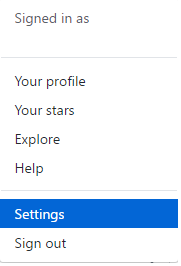
Después hace falta ir hasta la parte inferior donde se encuentran las opciones de desarrolladores, y pulsar la opción Personal access token. En esta pestaña pulsaremos a Generate New Token.

Nos aparecerá un cuadro con multitud de casillas de verificación a rellenar, además de un cuadro de texto donde le pondremos nombre al Token.
Las opciones a rellenar serán las representadas en la siguiente imagen.

Ya teniendo el Token creado podremos utilizarlo para autenticarnos en el programa. Una vez hecho no hará falta volver a preocuparnos del Token ya que se guardara en el perfil de usuario de la aplicación.
Para ejecutar el programa debemos ir a la ruta donde se instaló el programa y ejecutar el siguiente comando:
ghedsh
Para ver todas las opciones de ejecución de la aplicación usaríamos:
ghedsh -h
Al ejecutarse por primera vez, la aplicación pedirá el Token previamente creado. Tras introducirlo se procederá al proceso de logueo y GHEDSH ya estará listo para su uso.
Es posible directamente ejecutar el programa pasando por parámetro el Token.
ghedsh -t TOKEN
Esto es debido a que se aceptan varios usuarios, y al añadir un nuevo Token mediante esta opción, estaríamos directamente creando un nuevo usuario y guardándolo en el perfil de usuario.
Para poder cambiar de usuario deberíamos usar el método de ejecución:
ghedsh -u USUARIO
Que cambiaría el usuario si este existiese y se hubiese logueado correcta y anteriormente en la aplicación.
La ejecución de las consultas a veces mostraba cierta inconsistencia a la hora de devolver los resultados, sobretodo cuando no se encontraban datos que retornar. Por lo que era posible que en consultas similares se enviaran datos “vacíos”, o la API retornara fallo y por consecuencia parase la ejecución del programa.
Esto hizo que tuviese que hacer uso del manejo excepciones en cada consulta que no retornase datos, a base de probar y decidir que consulta necesitaba especial atención.
Las primeras versiones si bien siendo funcionales, demostraban que el manejo de la aplicación no era del todo cómodo para el usuario. Al tener a veces tantos datos que manejar, y tantas utilidades que usar en diferentes ámbitos, hacia que de primeras no fuese tan accesible al usuario la navegación y uso de GHEDSH.
Para mejorar esta situación se tomaron varias medidas. Se añadieron opciones de autocompletar de tanto los comandos como los datos volcados desde la API, se creó un historial no solo para la sesión actual sino también funcional cuando se volviese a ejecutar el programa, el guardado de la posición del último nivel al regresar a la aplicación, la creación de varios perfiles de usuario poder usar el programa en varias cuentas, etc.
Todas estas medidas han hecho más natural y cómoda la navegación, mejorando la usabilidad y eliminando el problema encontrado.
Tras ejecutar el programa por primera vez, no encontraremos en el nivel de usuario.
Lo primero que haremos es buscar nuestros repositorios, para eso usaremos el comando:
repos
Al ejecutarlo se listaran todos los repositorios pertenecientes al usuario, los que él sea colaborador, o los pertenecientes a una organización en la que pertenezca. Si el usuario tiene mucha actividad en la plataforma la lista de repositorios podría ser bastante extensa, por lo que existe una opción de búsqueda por expresión regular para agilizar el trabajo.
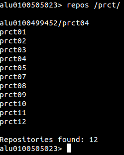
repos /RegExp/
En este caso he buscado repositorios que contengan prct.
El siguiente paso será acceder a un repositorio. Para ello usaremos el comando cd. La sintaxis será similar a la que suele emplear en una terminal.
cd [ruta]
Siendo posible ampliar la búsqueda a varios ámbitos usando.
cd [ruta1]/[ruta2]
Volver atrás hacia un directorio padre:
cd ..
O mezclar ambos tipos de parámetros para realizar una operación más compleja.
cd ../../[ruta1]/[ruta2]

Usando el comando nos situaremos en un repositorio cualquiera, en este caso pract05.
Los comandos y funcionamiento de los mismos varían según el ámbito de trabajo, por lo que el uso del comando help facilitara mucho la labor al usuario.
Usando tan solo el comando mostrara los diferentes comandos disponibles solo en ese nivel. Además de los comandos principales que están disponibles en toda la aplicación.
Es posible dar por parámetro a la opción nombres de comandos para que muestre específicamente la ayuda sobre ello.
Help [comando]
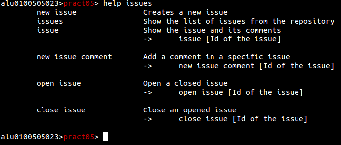
En este caso se ha buscado la ayuda contextual de las issues en un repositorio. Mostrando tanto los comandos de creación de issues, enseñar un issue, crear comentarios en issues y reabrir o cerrar un issue específico.
Vamos a dejar este repositorio y volver al directorio raíz del usuario. Ahí listaremos las Organizaciones donde estemos afiliados mediante el comando.
Orgs
Seleccionaremos una y entraremos a ella mediante cd. A veces el nombre de las organizaciones o repositorios son bastante complejos, por lo que al listar las mismas se crea una opción de autocompletar en la línea de comandos que activaremos con la tecla tabulador del teclado.
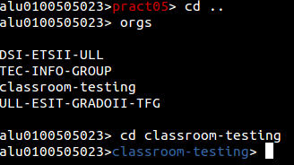
En el caso de este tutorial se entrara en una organización especialmente para creada para ello. Si ejecutamos de nuevo help podremos ver que las opciones han cambiado si lo comparamos con cualquier otro nivel de trabajo.
Si quisiésemos ir a otra organización sin tener que ir paso por paso. Podríamos hacer uso de la mezcla de parámetros comentada anteriormente. En este caso ejecutando cd ../TEC-INFO-GROUP nos llevaría a esa localización.
Siguiendo la metodología de GitHub Classroom, a partir de ahora trataremos a nuestra organización como una clase.
Y lo primero será buscar nuestros alumnos. Para ello usaremos el siguiente comando:
people
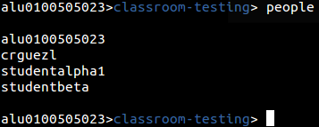
Como vemos, se mostraran los identificadores de GitHub de cada alumno, lo cual a veces es un problema para reconocerlos sobretodo si la clase tiene muchos alumnos.
Para resolver este problema se ha implementado un sistema de información extendida. Básicamente importaremos datos de los alumnos y los guardaremos en el sistema, en cada clase donde estén asignados. Para ello usaremos un sistema de carga de archivos en formato comma-separated-values o csv.
El primer paso será obtener los emails de los alumnos, que serán relacionados con sus identificadores de GitHub. Si trabajamos con programas de docencia online como Moodle, podríamos crear una tarea para que el alumno los publique y así poder exportarlos al archivos csv posteriormente.
“mail”,”github”
“studentbeta@gmail.com”,”studentbeta”
“studentalpha1@hotmail.com”,”studentalpha1”
“alu0100505023@ull.edu.es”,”alu0100505023”
Este podría ser el ejemplo del contenido de ese archivo csv. Primero colocaríamos los nombres de los campos en la primera línea, y en las siguientes lineas iríamos poniendo la información de cada alumno.
Para la carga de esta relación entre GitHub y la información de los alumnos, usaremos el comando new relation.
New relation [archivo.csv]
Hay que tener en cuenta que si el alumno no está registrado en la organización, se descartara directamente toda la información que se vaya a registrar de él.
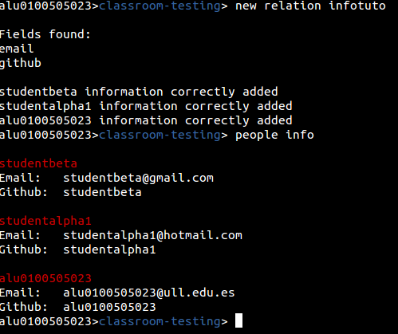
Tras la inserción de datos podremos mostrar todos los datos agregados con el comando people info.
Si queremos buscar los datos de un alumno en cuestión podremos usar la Id de GitHub como parámetro o una expresión regular
people info [Id de github]
people info /RegExp/

Este tipo de búsqueda podrá ampliarse a los diferentes campos que existan en la información adicional, no solamente al identificador de usuario.
Este punto de la nueva relación se trata de un punto intermedio, ya que para completar la información posteriormente se utilizara la utilidad new people info.
new people info [archivo csv]
En el nuevo archivo csv colocaremos toda la información que queramos del alumno. Teniendo en cuenta que en las cabeceras deberá haber alguno de los dos campos que relacionen la información anteriormente guardada. Debe estar o el campo email o el identificador de GitHub.
Ejemplo de información extendida más completa.
“email”,”nombre”,”apellido”,”github-url”
"studentbeta@gmail.com”,"Martin","Rodriguez Escudero","https://github.com/studentbeta"
“studentalpha1@hotmail.com”,"Vicente","Garcia Martin","https://github.com/studentalpha1"
“alu0100505023@ull.edu.es”,"Javier","Rodriguez Gomez","https://github.com/alu0100505023"
Esta información sería añadida a la ya posteriormente recopilada.
Este método está diseñado pensando en las dificultades que puede tener un profesor de primeras para que todos los alumnos den sus datos o los den de manera correcta. Se podría plantear una pequeña tarea a la clase para que se den los datos necesarios para la relación, y más adelante durante el curso ampliar con los datos completos.
Sin embargo, si se desea poner toda la información directamente desde la primera vez, también es posible realizarlo mediante el comando new people info, mientras en los datos se encuentren los campos de email y github.
Después de haber subido la nueva información, podremos ejecutar consultas como la búsqueda por nombre.

En este caso hemos buscado un alumno cuyo alguno de sus campos case con “martin”. Revolviéndonos los datos añadidos del nuevo csv.
Como podemos ver en la información hemos guardado la página web de GitHub de los alumnos. Esto hará que usando el comando open podamos abrir en un navegador la pagina que deseamos ver.
Open [ID de GitHub]
Abrir la web del perfil GitHub del alumno, si se encuentra información añadida.
Open /RegExp/
Abriría varios perfiles de GitbHub en el navegador por defecto. Por lo que aplicando el ejemplo anterior.
Open /Martin/
Mostraría las webs de los alumnos que casen con esa expresión.

Es posible abrir diferentes tipos de páginas, no solo perfiles de GitHub. Si por ejemplo queremos guardar el perfil de la plataforma Moodle del alumno, podríamos abrir las direcciones tal que:
open [ID de GitHub] /Parte de la URL/
open /RegExp/ /Parte de la URL/
Por lo que ejecutando open /Rodriguez/i /moodle/ se abrirán las webs de la plataforma Moodle, de los alumnos que casen con Rodriguez, si estuviesen guardados esos datos.
Lo primero que debemos saber es que las tareas se podrán diferenciar entre asignaciones individuales o asignaciones grupales.
¿Qué es un grupo? Un grupo de trabajo es una nueva categoría donde se encontraran uno o varios equipos de trabajo.
Podemos crear manualmente el grupo mediante el comando new group, o hacerlo mediante la creación de una tarea como se mostrara en el tutorial.

Mediante el comando groups podremos ver la lista de los grupos creados, donde se indicara el nombre del grupo, la lista de equipos y los estudiantes que estén en ellos.
Para crear la asignación usaremos el comando new assignment, que iniciara un asistente para la creación paso por paso de la tarea.
new assignment [nombre de la asignación]
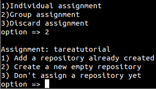
En este caso se ha optado por una tarea grupal, y como vemos lo primero que hace es pedirte un repositorio. Podemos asignarle un repositorio ya creado, crear un nuevo repositorio en blanco junto con un archivo README.MD, o no asignar nada por ahora.

El formato necesario será usuario y el nombre del repositorio, u organización y el nombre de repositorio. En este caso usaremos el repositorio prct05 de la cuenta personal del usuario.
Tras añadirlo, como hemos seleccionado una opción grupal, nos preguntara que grupos queremos añadir y aparecerá una lista de grupos ya creados para seleccionar el que queramos. En este caso queremos hacer un nuevo grupo, por lo que nos saltaremos este paso.
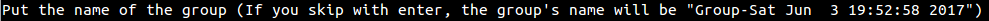
Al crear el nuevo grupo, añadiremos el nombre o podremos dejar que el programa cree el grupo con un nombre que indique la fecha y hora de creación.
De nuevo aparecerá una lista, esta vez siendo la lista de equipos para decidir cuál será el paso a tomar ahora.
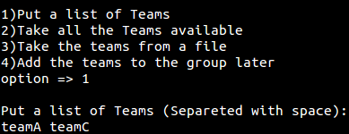
Podremos tanto escribir los equipos que deseamos, elegir todos los equipos disponibles, cargar desde un archivo (Con formato línea a línea) los equipos, o añadir posteriormente el o los equipos.
En este ejemplo se han añadido los equipos teamA y teamC, y con este último paso se ha creado correctamente la estructura de la asignación.
Este asistente no creara aun la asignación de tareas, para ello debemos ir hacia la propia asignación.
cd [nombre de la asignación]
Si se producirse redundancia entre nombres en la organización, podremos usar el parámetro “assig” para ir directamente a la tarea.
cd assig [nombre de la asignación]

Si
no recordamos el nombre de la tarea, solo tendremos que ejecutar el
comando assignments para que se muestre la lista de asignaciones.
Con comando info veremos toda la información de la asignación en la que estemos situados. Dentro de este ámbito podremos añadir o modificar los alumnos, grupos o repositorios que necesitemos.
En este caso Añadiremos un nuevo repositorio, en este caso en blanco, ya que queremos que nuestros alumnos empiecen a trabajar de cero.
Para ello usaremos el comando add repo.
Tras ejecutarlo veremos de nuevo el mismo menú de repositorio del asistente, donde elegiremos la opción que creamos conveniente.

Esta vez veremos un paso adicional, la petición para añadirle un sufijo al repositorio. Esto será necesario cuando existan varios repositorios, ya que a la hora de crear la tarea a cada grupo o alumno el programa tomara como nombre el nombre de la asignación y el nombre del grupo o alumno. Esto hará necesario un identificador para la creación de nuevos repositorios. Los sufijos podrán ser modificados posteriormente mediante change sufix
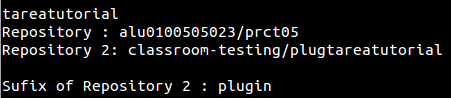
Por defecto el primer repositorio no tendrá un sufijo, pero si queremos podremos asignarle uno si lo viésemos conveniente.
El último paso será la creación de la tarea, para ello usaremos el comando make que creara toda la asignación de repositorios.
Make
Se ejecutara por parámetros y empezara el proceso de creación y coronación de repositorios para el alumnado.
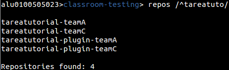
Si volvemos a la organización podremos comprobar que se han creado correctamente los repositorios.
A partir de aquí se podrían usar diferentes utilidades del programa para facilitar el análisis y la corrección de tareas. Tales como la creación de Issues, la muestra de commits de un repositorio, etc.
Vamos por ejemplo a clonar los repositorios en nuestro sistema, para ello podremos o seguir en la organización y usar una expresión regular con el comando clone
clone /RegExp/
O volver a la tarea como haremos, y ejecutar clone sin parámetros para que descargue automáticamente los repositorios.

Mediante el comando ! Podremos comprobar mediante un comando de bash, que efectivamente se han clonado los repositorios en el directorio de ejecución del programa.
![comando de bash]
Cuando acabemos de trabajar con los repositorios, podemos borrar el contenido local mediante rm clone files.
rm clone files
Borraría todos los ficheros guardados en la lista de clonado de la aplicación.
rm clone files /RegExp/
Borraría los repositorios indicados por el usuario.
! Ejecuta un comando bash en GHEDSH
cd Te lleva al path indicado por parámetro.
cd [path]
Para volver al directorio raíz lo ejecutamos sin parámetro.
cd
Para volver al nivel anterior usaremos el parámetro “..”
cd [..]
Por defecto buscara un Repositorio al final de la cola de prioridades, si quieres buscar un repositorio con mayor prioridad usaremos:
cd repo [nombre]
Para buscar por defecto una asignación usaremos el parámetro “assig”.
cd assig [nombre]
do Ejecuta un script con comando GHEDSH desde un fichero.
do [Fichero script]
exit Salir del programa.
help Lista de comandos disponibles.
rm clone files Borra los repositorios clonados con GHEDSH.
Puedes usar una expresión regular para borrar los repositorios que tú prefieras.
rm clone files /RegExp/
cat Muestra los datos de un fichero.
cat [fichero]
clone Clona el actual repositorio.
close issue Abre un issue abierto.
close issue [Id del issue]
col Muestra la lista de colaboradores de un repositorio.
commits Muestra la lista de commits del repositorio.
Info Muestra información sobre el repositorio.
issue Muestra el issue y sus comentarios.
issue [Id del issue]
issues Muestra la lista de issues del repositorio.
files Muestra los ficheros del repositorio dado
new issue Crea un nuevo issue.
new issue comment Añade un comentario a un issue.
new issue comment [Id del issue]
open Abre la web del repositorio de GitHub en el navegador por defecto.
open issue Abre un issue cerrado.
open issue [Id del issue]
private Cambia la privacidad de un repositorio. Espera “true” o “false” como parámetro.
private [true]
assignments Muestra la lista de asignaciones.
clone Clona un repositorio.
clone [repositorio]
Puedes usar una expresión regular para clonar varios repositorios usando el parámetro “/”.
clone /[RegExp]/
group Muestra la información de un grupo específico.
group [nombre del grupo]
groups Muestra la lista de grupos y los equipos que pertenecen a ellos.
new assignment Crea una nueva asignación en tu organización.
new assignment [nombre de la asignacion]
new group Crear un nuevo grupo. Espera por parámetro el nombre y los grupos dados uno a uno.
new group [nombre del grupo] [team1] [team2] [team3] ...
Si quieres importar los equipos desde un archivo, usa el parámetro “-f”.
new group -f [name of the group] [file]
new people info Recoge la información extendida desde un archivo a .csv encontrado en el path de ejecución.
new people info [nombre del fichero]
new relation Crea una relación para la información extendida entre la ID de GitHub y un email desde un archivo .csv.
new relation [nombre del fichero]
new repository Crea un nuevo repositorio en la organización.
new repository [nombre del repositorio]
new team Crea un nuevo equipo en la organización. Espera el nombre del equipo, y/o miembros dados uno por uno.
new team [nombre del equipo] [member1] [member2] [member3] ...
open Abre la URL de la organización de GitHub en tu navegador por defecto.
Si se ha añadido información adicional, se puede abrir la web del perfil de GitHub de un usuario pasándolo por parámetro.
open [ID de GitHub]
Se puede usar una expresión regular para abrir varios usuarios.
open /RegExp/
Puedes abrir un campo específico si este contiene una URL.
open [user] [Nombre del campo]
Si no se desea poner el campo, se puede hacer una búsqueda en los campos con parte de la URL que se quiera abrir.
open [user] /[parte de la URL]/
Cambien se puede usar una expresión regular para abrir varios usuarios a la vez con ese tipo de búsqueda.
open /RegExp/ /[part of the URL]/
people Muestra los miembros de la organización.
people
Si añades el parámetro “info”, se mostrara la información extendida.
people info
Para encontrar a alguien específico en la información extendida, puedes dar la ID de GitHub por parámetro.
people info [github id]
Puedes usar una expresión regular que buscaría por cada campo, usando el parámetro “/”.
people info /[RegExp]/
repos Lista los repositorios de la organización.
Usa el parámetro “-a” para mostrar directamente la lista completa sin interrupciones.
repos -a
Puedes usar una expresión regular para mejorar la búsqueda usando el parámetro “/”
repos /[RegExp]/
rm group Borra un grupo
rm group [name of the group]
rm people info Borra la información extendida de una clase.
rm repository Borra un repositorio en la organización.
rm repository [nombre del repositorio]
rm team Borra un equipo en la organización. Espera el nombre del equipo.
rm team [nombre del equipo]
teams Muestra los equipos de la organización.
add group Añade un nuevo grupo a la asignación.
add repo Añade o crea un repositorio para la asignación.
add students Añade nuevos estudiantes a la asignación.
change repo Cambia un repositorio de la asignación.
change repo [Numero del repositorio]
change sufix Cambia el sufijo de un repositorio.
change sufix [numero del repositorio]
info Muestra la información de la asignación.
make Crea el o los repositorios de la asignación en GitHUb para cada equipo de cada grupo o estudiante, dependiendo de las características de la asignación.
open Abre la página en GitHub con la disposición de repositorios de la asignación.
rm group Borra un grupo de la lista de la asignación.
rm group [name]
Para borrar todos los grupos de la lista, usaremos el parámetro “-all”.
rm group -all
rm repo Borra un repositorio de la lista de la asignación.
rm repo [id]
rm student Borra un estudiante de la lista de la asignación.
rm student [name]
Para borrar toda la lista de estudiantes usaremos el parámetro “-all”.
rm student -all
add team member Añade un miembro a aun equipo.
add team member [nuevo miembro]
people Muestra los miembros del equipo.
open Abre la URL del equipo en GitHub.
repos Muestra los repositorios del equipo.
Usa el parámetro “-a” para mostrar directamente la lista completa sin interrupciones.
repos -a
Puedes usar una expresión regular para mejorar la búsqueda usando el parámetro “/”
repos /[RegExp]/
clone Clona un repositorio.
clone [repositorio]
Puedes usar una expresión regular para clonar varios repositorios usando el parámetro “/”.
clone /[RegExp]/
new repository Crea un repositorio en tu cuenta personal.
new repository [nombre del repositorio]
open Abre el perfil del usuario en la web de GitHub.
orgs Muestra las organizaciones del usuario.
repos Muestra tus repositorios.
Usa el parámetro “-a” para mostrar directamente la lista completa sin interrupciones.
repos -a
Puedes usar una expresión regular para mejorar la búsqueda usando el parámetro “/”
repos /[RegExp]/
rm repository Borra un repositorio del usuario.
rm repository [nombre del repositorio]
Si bien existen aplicaciones proporcionadas por GitHub, creo que mi trabajo ha creado una buena alternativa dando más funcionalidades para el usuario y buscando un nuevo enfoque de uso. Además, el hecho de haber trabajado aprendiendo las necesidades reales de un profesor hace que en cuestiones de utilidad, este por delante de las aplicaciones oficiales.
La creación de este proyecto me ha ayudado a tener más experiencia con el uso y el manejo de las API, además de mejorar mis conocimientos de Ruby. También me ha dado la oportunidad de desarrollar un programa pensando en su instalación en otro sistema, algo de lo que carecía de experiencia y ha supuesto una valiosa experiencia.
En mi plan de trabajo de futuro sobre la aplicación, pretendo añadir nuevas utilidades, y además pensar en el uso del programa no solo desde el enfoque del profesor, sino la posibilidad de uso del alumno. También espero la posibilidad de poder actualizar datos entre este proyecto y las demás herramientas oficiales, algo que en la actualidad no es posible.
He de agradecer a mi tutor Casiano Rodríguez León, por ofrecerme la oportunidad de crear este proyecto, además de por toda su ayuda dada. El crear algo desde una necesidad y el pensar y buscar soluciones a un problema, ha sido una de las razones por las que siempre he querido ser informático. Por lo que personalmente haber realizado este proyecto me ha resultado muy satisfactorio, y creo que ha sido la mejor manera de terminar mi carrera y reafirmarme sobre mis futuros proyectos profesionales.
Gracias a todos por leer esta memoria, espero que les haya gustado mi trabajo.
While aplications given for GitHub do exist, I belive my work has created a good alternative, providing more functionalities and a new perspective of usage. In addition, to be able to work and learn simultaneously about the real necessities of a teacher, adds more value to this project in comparison to the official applications in matters of utility.
The creation of this project has helped me to earn more experience with the usage of the API system, and has also improven my knowledge of Ruby. It has also given me the opportunity to develop a program bearing its installation in another system in mind, and that was a valuable experience.
Regarding my future work about this application, I pretend to add new utilities and revise the program usage not only from a teacher's but also from a pupil's point of view. I hope that it will be possible to update data between this project and the official applications, which cannot yet be done.
I want to express my gratitude towards my tutor, Casiano Rodríguez León, for giving me the oportunity to create this project, and for all his help. To be able to create something out of a necessity, and to think and look for solutions to concrete problems, has been one of the main reasons I have always wanted to become a computer engineer. Therefore, working on this project has been very satisfactory for me, and I strongly believe that it was the best way to finish my career while reafirming myself about my future profesional projects.
Thank you for reading this memory. I hope that you enjoyed my work.
Se han empleado unos seis meses de trabajo para desarrollar todo el proyecto. Aplicando la media de sueldo en España para un desarrollador, implicarían un gasto de 1600 euros al mes.
Esto haría unos 9600 euros en gastos de desarrollo y mano de obra. Todo ello sin pensar en el futuro mantenimiento de la aplicación.
Una manera de obtener mayores ingresos con la aplicación podría ser el ofrecer a los usuarios que quisiesen una versión con más utilidades, o el desarrollo de nuevos métodos de manera especifica para algún usuario o entidad de enseñanza que pueda ofrecer interés. Al ser una aplicación de software libre, una versión “premium” sería publicitada por un precio más bien simbólico, mientras que el desarrollo más específico y personalizado tendría que verse sujeto a un análisis según los requisitos del interesado.
[1] GitHub Education https://education.github.com/
[2] Repositorio Teacher's Pet
https://github.com/education/teachers_pet
[3] GitHub Classroom: https://classroom.github.com/
[4] GitHub Developer web https://developer.github.com/v3/
[5] Octokit Api
https://www.rubydoc.info/github/pengwynn/octokit/Octokit
[6] Documentación Ruby https://ruby-doc.org/core-1.9.3/
[7] Stackoverflow http://stackoverflow.com/
[8] Repositorio GHEDSH
https://github.com/ULL-ESIT-GRADOII-TFG/ghedsh
[9] Pagina GHEDSH en RubyGems